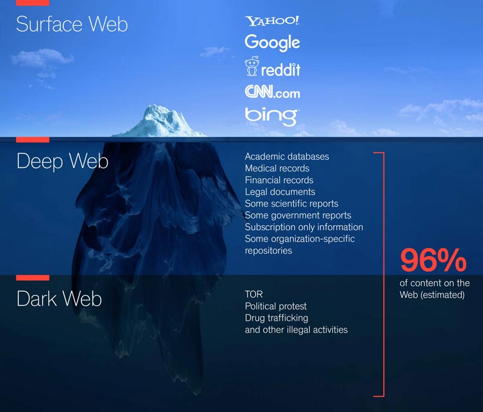
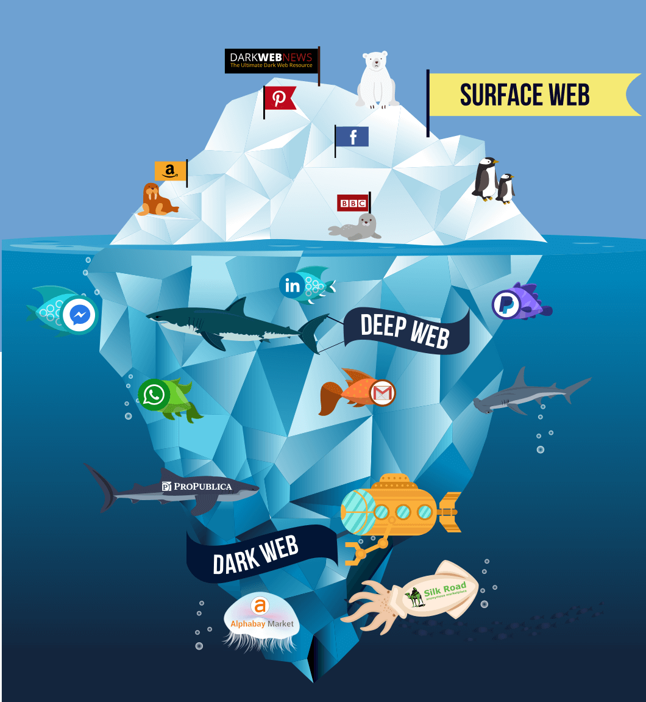
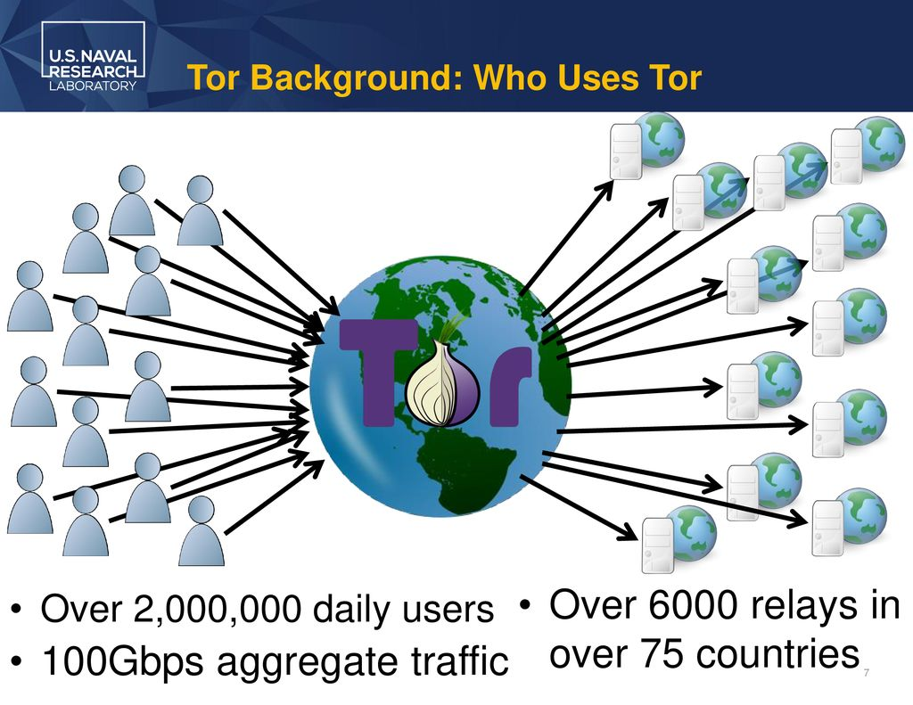

A short primer on the three layers of the web and on TOR: what distinguishes them, how each is reached, and how to stand up a Tor hidden service on your own machine.
The internet is a huge network of connected computers. The world wide web is a collection of webpages found on that network, and a browser uses the internet to reach them. Within it there are three practical layers.
The common internet everyone uses to read articles, news, and shop. This is the regularly indexed internet: Google, Twitter, YouTube and the rest. You search for something and land on a page that a search engine has already indexed and can see.
Accessing it: search for anything in any search engine. Google itself is part of the surface web.
The deep web, or invisible web, is the part of the web whose contents are not indexed by standard search engines. You have to go to those places directly rather than find them by searching. It holds databases, social media, academic information, and government resources.
Accessing it: you need the exact address or URL, because these pages are not indexed and cannot be searched.
The dark web is a subset of the deep web that is not only unindexed but also requires something special to reach it, such as specific proxying software or authentication, for example TOR. These pages need an additional sub-network such as Freenet, I2P, or TOR.
It is often associated with criminal activity of various degrees: selling drugs and weapons, gambling, and worse. Every coin has two sides, though, and there are legitimate uses, the majority of them in journalism, where reporters are required to protect their identity.
Accessing it: special software (TOR) plus the exact address or URL of the page.


Tor is free and open-source software for enabling anonymous communication. It directs internet traffic through a free, worldwide, volunteer overlay network of more than seven thousand relays, concealing a user's location and usage from anyone conducting network surveillance or traffic analysis. That makes internet activity harder to trace, including visits to websites, online posts, instant messages, and other forms of communication. Tor's intended use is to protect the personal privacy of its users and their freedom to conduct confidential communication without being monitored.

.onion sites, which cannot be opened in ordinary browsers.Download and extract the Tor Browser. Then locate the torrc file:
locate torrc
Inside the Tor Browser bundle it sits under tor-browser_en-US/Browser/TorBrowser/Data/Tor. Open it and add the following lines, adjusting the directory and the port to match your own server:
HiddenServiceStatistics 0 HiddenServiceDir /path/to/tor-browser_en-US/Browser/TorBrowser/Data/Tor/ HiddenServicePort 80 127.0.0.1:80
Make sure a server is running on the right port, in this case Apache on port 80. Restart Tor and it will write the hostname and private key into the hidden service directory, giving you the .onion address for the service.